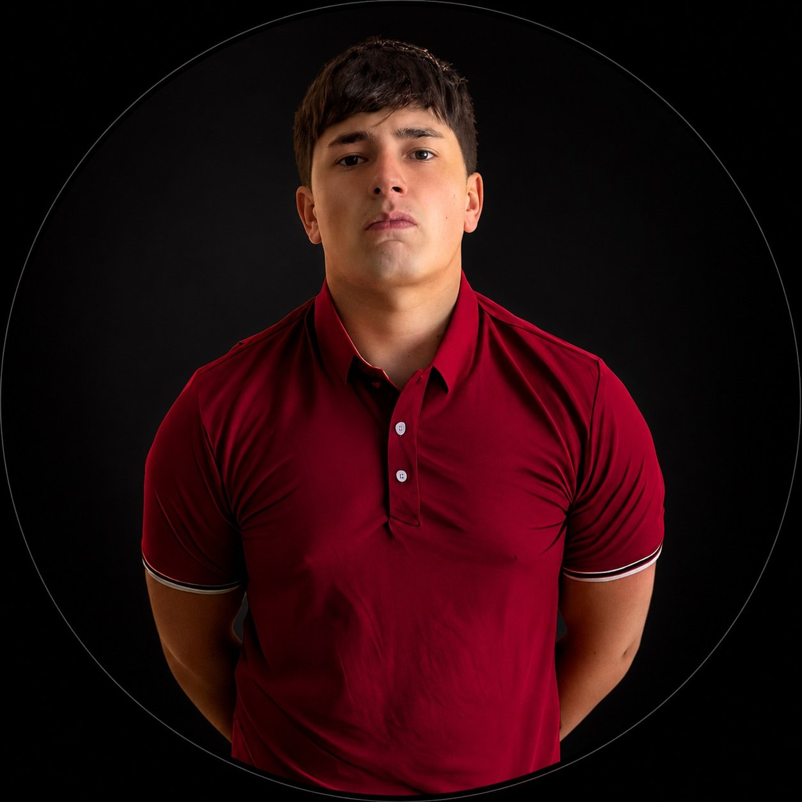

Desarrollador Full Stack en formación
Chile
Estudiante de Ingeniería Informática y cofundador de KUTT. Me enfoco en el desarrollo de software y en la creación de soluciones digitales que permitan resolver problemas reales.